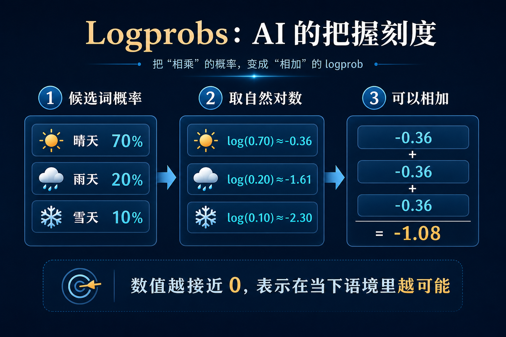
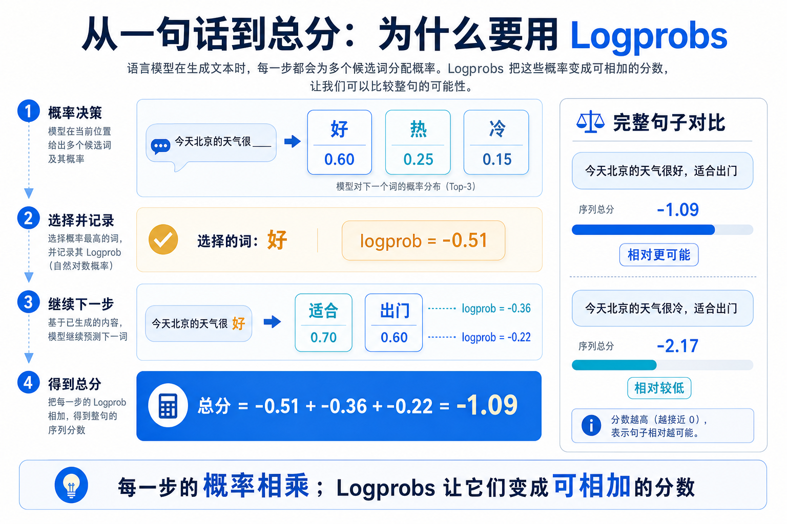

为什么这个概念重要？
大模型并不是先想好整篇答案，再把它打印出来。它是在每一个位置都问一次：“在已经出现这些字之后，下一小块文字最可能是什么？”这个小块叫 token，可能是一个字、一个词，或一个词的一部分。
每一步，模型都会给候选 token 一张概率表。可是一句话往往有几十步：如果直接把每一步的概率连乘，数字会迅速小到几乎看不见，也很难比较两句不同答案。Logprobs（对数概率）把每一步的概率换成一种可以相加的记账分数：概率越高，分数越接近 0；概率越低，分数越负。
这不是一个只属于工程师的“后台数字”。它让开发者看见模型在何处犹豫、比较多个候选答案、给低把握的分类交给人工复核，也可以给 RAG 问答增加“检索材料是否足够”的一道闸门。理解 Logprobs，才能正确理解 AI 的“把握”是什么，又不是什么。
一个直观类比：把路线选择记成“可累加的里程”
想象你和朋友要从学校走到图书馆。每个路口都有几条路：一条是大家最常走的主路，另一条是绕一点的小路，还有一条会通向施工围挡。你每经过一个路口，都会给选中的路记一笔“顺路程度”。
如果把每一步的“走对概率”直接相乘，走十个路口后会得到一个很小的小数；既难读，也不方便比较两条路线。于是你们改用一种记账法：把每一步概率取自然对数。原来需要相乘的概率，变成了可以相加的分数；整条路线的总分就是每个路口分数的和。
Logprobs 就是这本“路线账”。它不说“这条路在现实中一定安全”，只说“在模型已经看到的上下文里，这一步有多符合它学到的语言模式”。总分更接近 0 的句子，表示模型把它看作相对更顺、更像会接着出现的文字。

工作原理：从下一词概率到整句分数

第一步：模型读上下文。比如看到“今天北京的天气很”，它会为下一 token 准备候选：好、热、冷、糟等。这里的概率永远是“在已经出现的文字条件下”的概率，不是脱离语境的词典频率。
第二步：模型把原始偏好换成概率。上一讲的 Logits 是原始打分，Softmax 把它们换成总和为 1 的概率分布。假设“好”的概率是 0.60，那么它的 logprob 是 log(0.60)≈−0.51；“冷”的概率若为 0.15，logprob 约为 −1.90。两者都为负，是正常的：0 到 1 之间的概率取自然对数，本来就不大于 0。
第三步：模型选择一个 token，并记录这一笔 logprob。新 token 被接到句子末尾后，模型重新看新的上下文，再为下一步计算新的概率和 logprob。它不会只在第一步算一次。
第四步：把每一步的 logprob 相加，得到整段文字的序列分数。概率相乘会变成对数相加，这是 Logprobs 最实用的原因。比较不同长度的答案时，通常还要看平均每 token 的 logprob，或使用专门的长度处理；不能只盯着总分。
第五步：有些 API 会返回 top_logprobs，也就是每一步最靠前的若干候选与它们的 logprob。它像让你看到模型当时还认真考虑过哪些“岔路”。但可返回的数量、模型和端点各不相同，产品实现时必须查当前文档。
关键术语解释
| 术语 | 专业解释 | 白话解释 |
|---|---|---|
| Token | 模型处理和生成文本的基本小单位，可以是字、词或词的一部分。 | AI 不是一整句一整句写，而是一小块一小块接着写。 |
| 条件概率 | 在既有上下文条件下，下一个 token 出现的概率。 | 同一个“好”字，放在不同前半句后，机会完全不同。 |
| Logprob | 某个 token 条件概率的自然对数，即 log(p)。 | 把“这一步有多像会出现”记成方便加总的分数。 |
| Top logprobs | 某个位置若干最可能候选 token 及其对数概率。 | 像看到模型在路口还认真比较了哪些岔路。 |
| 序列分数 | 一段输出中各 token logprob 的和。 | 把一整句话每一步的记账分加起来。 |
| 平均 logprob | 序列分数除以 token 数，常用于缓解长度差异。 | 比较长短不同句子时，看每一步平均顺不顺。 |
| Perplexity / 困惑度 | 由平均负 logprob 指数化得到的语言模型不确定性指标。 | 模型越拿不准，像面对的可选岔路越多，困惑度通常越高。 |
| Logits 与 Softmax | Logits 是概率化前的原始分；Softmax 将其转换为概率分布。 | 先打草稿分，再换成百分比；Logprobs 则记下百分比的对数。 |
| 校准（Calibration） | 模型的置信度与实际正确率是否匹配的性质。 | 说九成把握时，长期看能不能真的九成正确。 |
一个真实应用案例：给企业知识库问答加一道“先别硬答”的闸门
假设一家公司的 AI 客服使用 RAG：先从制度库检索几段材料，再回答“报销凭证要保存多久？”最危险的情况不是它回答“不知道”，而是材料里没有答案，它却写出一个听起来很像真的年限。
产品团队可以要求模型在正式回答前，只输出 True 或 False： “给出的材料是否足够支持回答？”然后读取这一个分类 token 的 logprob，以及最可能的替代选项。如果模型对 True 的相对把握不够高，就不让它自由作答，而是提示“资料不足，请转人工或补充检索”。
OpenAI 的官方示例展示了这种“检索上下文是否足够”的自评估思路；同一类信号也可用于文章标签、自动补全和候选答案排序。真正可靠的系统不会把 Logprobs 当判决书：它会把阈值放在离线评测、人工抽检和可追溯来源之后，用它决定何时放行、何时复核。
常见误区
- 误区一：logprob 高，就是事实是真的。不对。它描述模型在当前上下文下对下一个 token 的生成倾向，不是对外部世界真假的证明。
- 误区二：−0.2 比 −2.0 更差。不对。在同一套条件下，−0.2 更接近 0，代表概率更高；0 对应 100% 概率。
- 误区三：把一整句的 logprob 相加，就能公平比较任何句子。不完整。长句有更多项相加，往往自然得到更低的总分；比较不同长度候选时，要看平均分或采用长度校正。
- 误区四：只要设置一个阈值，就能消灭幻觉。不对。研究发现模型的概率可能并不校准：它给得很有把握，仍可能错。阈值需要用真实业务数据验证，并和检索、规则、人工复核配合。
- 误区五：所有模型和 API 都能返回同样的 Logprobs。不对。是否支持、返回哪种 token 信息、top 候选数上限，都取决于具体模型与接口版本。
总结：3句话讲清核心认知
复习问题
- 为什么整句的概率直接相乘会不方便？Logprobs 怎样把这个问题改写成“可加”的问题？
- 两个 logprob 分别是 −0.3 和 −2.1。在相同上下文与设置下，哪个 token 更可能出现？为什么？
- 企业知识库问答中，为什么即使模型对“材料足够”给出很高 logprob，仍应保留来源核验或人工复核？